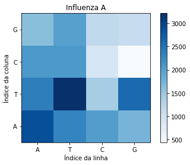

Utilizando mapas de calor no Python para comparação de genomas
in Python
July 1, 2022
Comparação de genomas
Pretende-se comparar duas sequências de DNA: SARS-CoV-2 identificado na cidade de Wuhan (China) e o Virus da Influenza A identificado na California (US).
O DNA é uma molécula presente em todos os seres vivos, que é responsável por armazenar as caracterı́sticas hereditárias. Ela é composta por sequências de nucleot́ideos, que podem ser de quatro tipos: Adenina (A), Timina (T), Citosina (C) ou Guanina (G).
Neste estudo de caso, queremos avaliar se estruturas com funções parecidas de organismos diferentes têm diferenças. Para isso vamos avaliar a quantidade de pares de nucleot́ideo .
Os dados utilizados para este estudo referem-se a sequências de DNA disponíveis nos seguintes links: SARS-COV-2 e Virus da Influenza A
import numpy as np
import matplotlib.pyplot as plt
covid = open("covid.fasta").read()
print(covid[98:])
influenza = open("influenza.fasta").read()
print(influenza[104:])
covid = covid.replace("\n", "")
pares1 = []
for i in range(len(covid)-1):
pares1.append(covid[i] + covid[i+1])
print(pares1)
influenza = influenza.replace("\n", "")
pares2 = []
for i in range(len(influenza)-1):
pares2.append(influenza[i] + influenza[i+1])
print(pares2)
## Contar frequencia
from collections import Counter
contagem = Counter(pares)
print(contagem)
AT= pares1.count('AT')
AC= pares1.count('AC')
AG= pares1.count('AG')
AA= pares1.count('AA')
TA= pares1.count('TA')
TT= pares1.count('TT')
TC= pares1.count('TC')
TG= pares1.count('TG')
CA= pares1.count('CA')
CT= pares1.count('CT')
CC= pares1.count('CC')
CG= pares1.count('CG')
GA= pares1.count('GA')
GT= pares1.count('GT')
GC= pares1.count('GC')
GG= pares1.count('GG')
ATc= pares2.count('AT')
ACc= pares2.count('AC')
AGc= pares2.count('AG')
AAc= pares2.count('AA')
TAc= pares2.count('TA')
TTc= pares2.count('TT')
TCc= pares2.count('TC')
TGc= pares2.count('TG')
CAc= pares2.count('CA')
CTc= pares2.count('CT')
CCc= pares2.count('CC')
CGc= pares2.count('CG')
GAc= pares2.count('GA')
GTc= pares2.count('GT')
GCc= pares2.count('GC')
GGc= pares2.count('GG')
matriz1 = np.array([AA,AT,AC,AG,TA,TT,TC,TG,CA,CT,CC,CG,GA,GT,GC,GG])
print(matriz1)
matriz2 = np.array([AAc,ATc,ACc,AGc,TAc,TTc,TCc,TGc,CAc,CTc,CCc,CGc,GAc,GTc,GCc,GGc])
print(matriz2)
matriz3 = matriz1.reshape(4,4)
print(matriz3)
matriz4 = matriz2.reshape(4,4)
print(matriz4)
plt.imshow(matriz3, cmap = 'Blues', origin="lower")
plt.xlabel('Índice da linha'); plt.ylabel('Índice da coluna')
plt.xticks((0,1,2,3),['A','T','C','G'])
plt.yticks([3, 2, 1, 0],['G','C','T','A'])
plt.title("Influenza A")
_ = plt.colorbar()

plt.imshow(matriz4, cmap = 'Blues', origin="lower")
plt.xlabel('Índice da linha'); plt.ylabel('Índice da coluna')
plt.xticks((0,1,2,3),['A','T','C','G'])
plt.yticks([3, 2, 1, 0],['G','C','T','A'])
plt.title("Covid-19")
_ = plt.colorbar()
Para acessar o código no Binder.
Para acessar o código no Github.
- Publicado em:
- July 1, 2022
- Tempo de leitura:
- 2 minutos de leitura, 305 palavras
- Categorias:
- Python
- Veja também: